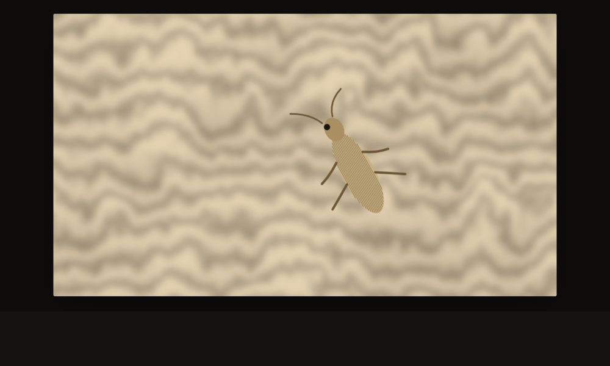
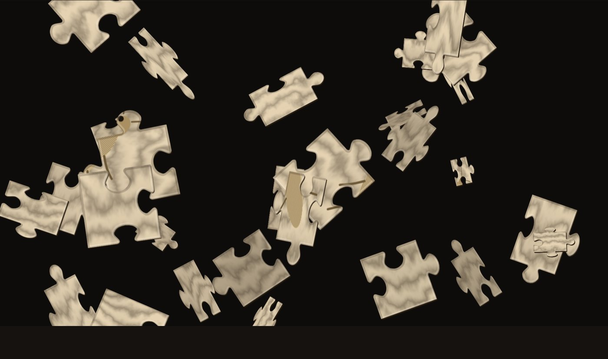
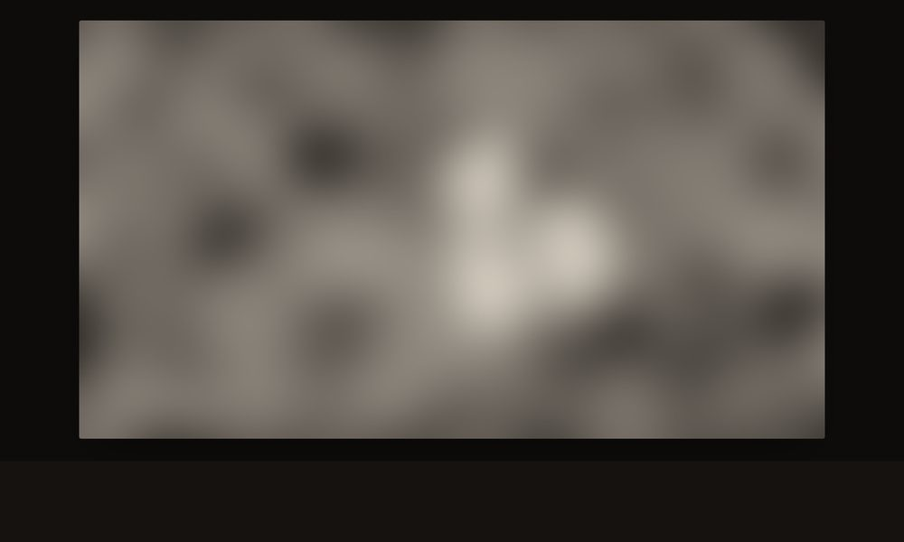
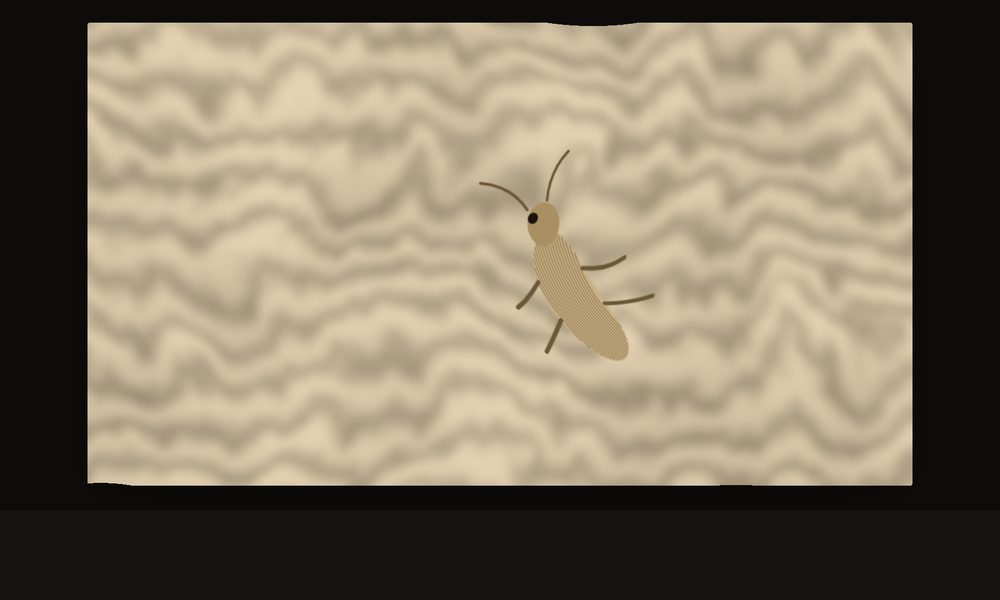
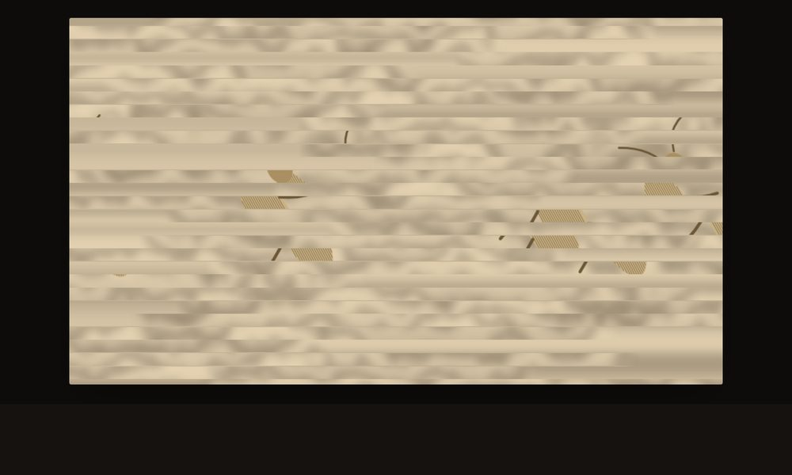
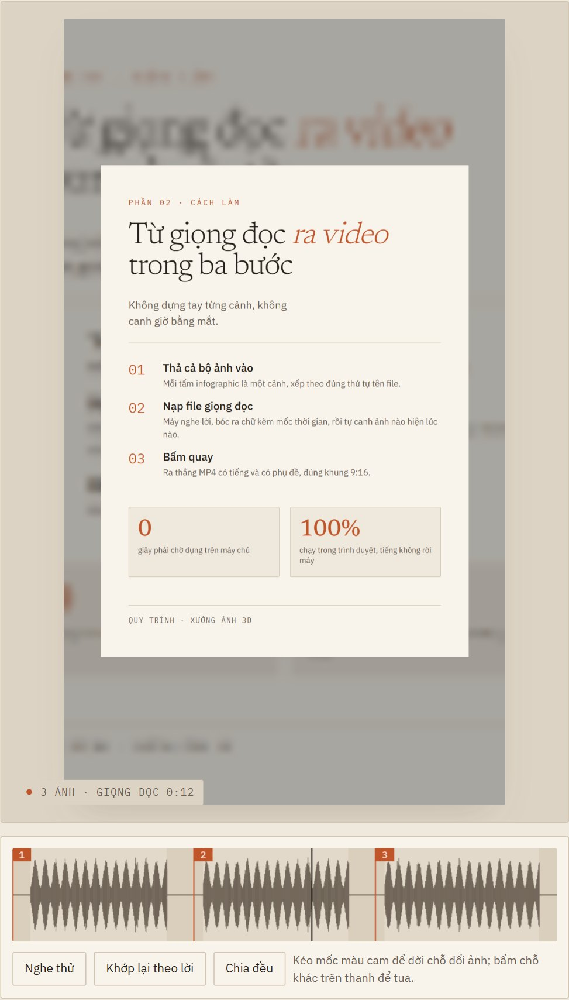

Thị sai
Vật ở gần dịch nhiều hơn nền khi bạn rê chuột, nên mắt đọc ra khối 3D từ một tấm ảnh phẳng. Có thêm chế độ kính đỏ–lam cho ai có kính 3D.
chạy trong trình duyệt · không cài đặt · ảnh không rời máy bạn
Thả một tấm ảnh vào, nó dựng ra chiều sâu và cho ảnh chuyển động như một khối 3D — nghiêng ngả theo con trỏ, gợn sóng, vỡ thành mảnh ghép rồi tự lắp lại. Hoặc thả cả bộ ảnh infographic kèm một file giọng đọc, để máy nghe lời rồi tự canh ảnh theo tiếng. Chỉnh xong bấm quay, ra thẳng video đúng khung 9:16 cho TikTok, Reels hay Shorts.

ghép mảnh · 28 mảnh đang trôi trước khi tự lắp lại
Dùng riêng hoặc chồng lên nhau. Mọi thứ hiện ra ngay khi kéo thanh trượt, không phải chờ dựng lại.

Vật ở gần dịch nhiều hơn nền khi bạn rê chuột, nên mắt đọc ra khối 3D từ một tấm ảnh phẳng. Có thêm chế độ kính đỏ–lam cho ai có kính 3D.

Không cần ảnh chụp bằng máy đặc biệt. Vùng nét được đọc là ở gần, vùng mờ ở xa — ảnh macro hay chân dung xoá phông cho kết quả đẹp nhất.

Sóng ngang, gợn nước, hay lụa bay. Bật thêm một công tắc thì chủ thể ở gần gợn mạnh còn hậu cảnh chỉ lay nhẹ — sóng ăn khớp với chiều sâu.

Giấu kín ảnh bằng sóng xé, kẻ sọc, ô lưới hay pixel, rồi lộ dần cho người xem đoán. Bấm quay một lần là ra trọn clip đố.
Công cụ thứ ba trong xưởng. Thả cả bộ ảnh infographic vào, rồi hoặc đưa nó một file giọng đọc để nó nghe và bóc chữ, hoặc dán lời vào để nó tự đọc thành tiếng. Đằng nào cũng ra một file MP4 có tiếng và có phụ đề cháy sẵn trên hình, ảnh đổi đúng nhịp lời.
68% đọc là sáu mươi tám phần trăm.mp3, m4a,
wav thu từ trước. Giọng người vẫn là hay nhất.
ba tấm infographic, một giọng đọc 12 giây, ba mốc đổi ảnh
Không có bước nào phải chờ dựng hay tải lên máy chủ — mọi tính toán chạy ngay trên máy bạn.
Kéo thả, bấm chọn, hay dán bằng Ctrl+V. Trên điện thoại thì mở thẳng thư viện hoặc máy ảnh.
Chọn hiệu ứng, khung hình, nền — màu trơn, chuyển sắc, hay chính tấm ảnh làm mờ. Thấy kết quả ngay lập tức.
Quay thẳng từ khung hình ra MP4 hoặc WebM, tự tải về máy. Không watermark, không giới hạn số lần.
Chọn khung là thấy ngay bố cục, chỉnh nền cho vừa mắt rồi mới quay — chứ không phải quay xong mới biết nó ra sao.
| Khung | Dùng cho | Ở độ nét 1080 |
|---|---|---|
| 9:16 | TikTok, Reels, Shorts | 1080 × 1920 |
| 16:9 | YouTube | 1920 × 1080 |
| 1:1 | 1080 × 1080 | |
| 4:5 | 1080 × 1350 |
Có sẵn một ảnh mẫu nếu bạn chỉ muốn xem nó chạy thế nào.